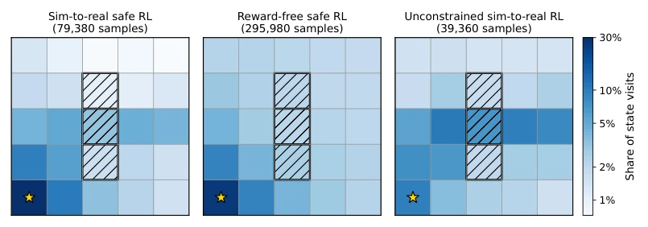
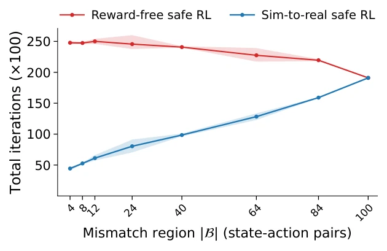
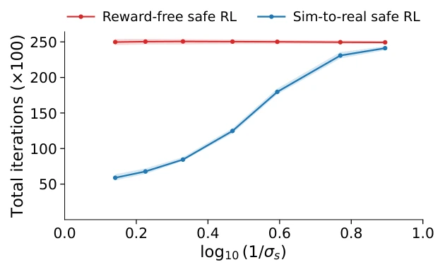
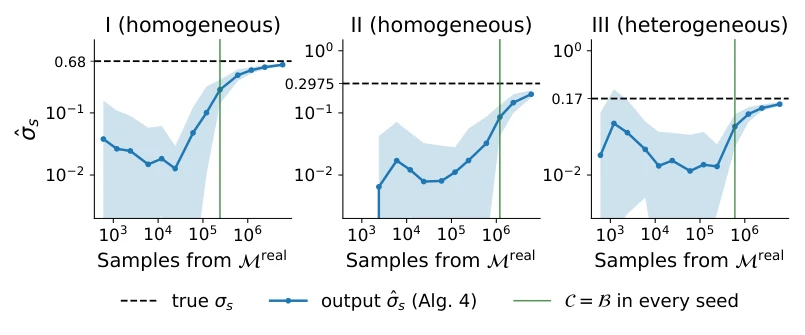

This paper prescribes a potent remedy for the pain points of 'Sim-to-Real' (Sim-to-Real), but the prescription is somewhat 'hardcore'. The authors forcibly integrate safety constraints and Reward-Free RL, attempting to ensure robots do not hit walls or violate regulations even when the simulator is inaccurate. The highlight is that it no longer blindly trusts the simulator, but uses statistical testing to 'identify' where the simulator deceives, sampling only there, and directly using simulator data elsewhere. This 'precision strike' strategy is indeed smarter than full-scale retraining. But there are also many drawbacks: First, it assumes the difference between the simulator and the real machine must be 'separable shift', which is a strong assumption in actual physical systems; if the difference is subtle and continuous, this theory might collapse directly; Second, the algorithm relies on a known strictly feasible baseline policy, which cannot be found at all in many complex tasks; Finally, although the theoretical sample complexity is beautiful, the experiment only runs in a simple Gridworld; once in high-dimensional continuous space, will the optimization of that 'mixture policy' become a computational nightmare? Overall, the theory is very substantial, but implementation depends on the 'temperament' of the physical world.
研究动机Motivation
在具身智能领域，直接在真实世界训练强化学习（RL）面临两大拦路虎：样本效率低（样本太贵）和安全性（撞车、伤人）。虽然利用仿真器（Simulator）训练再迁移（Sim-to-Real）是主流做法，但仿真器永远无法完美复刻现实，导致‘仿真-现实不匹配’（Sim-to-Real Mismatch）。这种不匹配在安全关键任务（如自动驾驶、医疗机器人）中是致命的：仿真里安全的策略，上线可能直接违规。现有解决方案主要有两类：一是域随机化（Domain Randomization）或鲁棒RL（如As et al., 2026; Zhang et al., 2024），但这往往过于保守，为了应对最坏情况牺牲了性能；二是安全元RL（Safe Meta RL，如Ni and Kamgarpour, 2026），但这要求真实环境必须被仿真分布覆盖，一旦仿真器有偏差（如未建模的延迟），假设就失效了。此外，现有的奖励无关安全RL（如Huang et al., 2023）虽然支持任意奖励规划，但完全在线采样，忽略了仿真器的价值；而利用仿真器的方法（如Qu et al., 2025）又缺乏安全保证。因此，亟需一种既能利用仿真器减少采样，又能严格保证安全探索，且能应对仿真器偏差的算法。
In the field of embodied intelligence, training Reinforcement Learning (RL) directly in the real world faces two major hurdles: low sample efficiency (samples are too expensive) and safety (collisions, injuries). Although training with a simulator and then transferring (Sim-to-Real) is the mainstream approach, simulators can never perfectly replicate reality, leading to 'Sim-to-Real Mismatch'. This mismatch is fatal in safety-critical tasks (such as autonomous driving, medical robots): a strategy safe in simulation may directly violate regulations upon deployment. Existing solutions mainly fall into two categories: one is Domain Randomization or Robust RL (e.g., As et al., 2026; Zhang et al., 2024), but this is often too conservative, sacrificing performance to cope with the worst-case scenario; The second is Safe Meta RL (e.g., Ni and Kamgarpour, 2026), but this requires the real environment to be covered by the simulation distribution; once the simulator has bias (e.g., unmodeled latency), the assumption fails. In addition, existing reward-free safe RL (e.g., Huang et al., 2023) supports arbitrary reward planning, but relies entirely on online sampling, ignoring the value of the simulator; And methods utilizing the simulator (e.g., Qu et al., 2025) lack safety guarantees. Therefore, there is an urgent need for an algorithm that can utilize the simulator to reduce sampling, strictly guarantee safe exploration, and cope with simulator bias.
1. **不匹配区域估计（Mismatch Region Estimation）**：算法初始化整个状态-动作空间为‘不匹配’。在每次迭代中，利用真实世界数据构建经验转移模型，并计算其置信区间。如果经验模型与仿真器模型在统计上无法区分（考虑置信界后差异小于阈值σs），则将该状态-动作三元组标记为‘匹配’，并从‘不匹配区域’中移除。这确保了算法只关注那些仿真器确实骗人的地方。
2. **混合模型构建（Hybrid Model Construction）**：基于估计的不匹配区域，构建一个混合动力学模型。在不匹配区域，使用真实世界采集的数据估计转移概率；在匹配区域，直接复用仿真器模型。这样既利用了仿真器的廉价数据，又修正了关键区域的偏差。
This paper proposes a Safe Sim-to-Real transfer algorithm based on a 'Hybrid Model', with the core idea being 'only sample where the simulator is inaccurate'. The overall process is divided into three key stages:
1. **Mismatch Region Estimation**: The algorithm initializes the entire state-action space as 'mismatch'. In each iteration, an empirical transition model is constructed using real-world data, and its confidence interval is calculated. If the empirical model and the simulator model are statistically indistinguishable (the difference is less than threshold σs after considering confidence bounds), then that state-action triplet is marked as 'matched' and removed from the 'mismatch region'. This ensures the algorithm only focuses on places where the simulator indeed deceives.
2. **Hybrid Model Construction**: Based on the estimated mismatch region, a hybrid dynamics model is constructed. In the mismatch region, transfer probabilities are estimated using data collected from the real world; in the matched region, the simulator model is directly reused. This both utilizes the simulator's cheap data and corrects biases in key regions.
3. **Safe Exploration Policy Calculation**: To sample efficiently, the algorithm needs to calculate an exploration policy that maximizes 'value estimation error'. The authors derive a computable certificate, converting the unknown upper bound of real-world value error into a 'reward' function (Bonus) on the hybrid model. By solving a standard Constrained Markov Decision Process (CMDP) to maximize this Bonus, a candidate policy is obtained. To prevent the candidate policy from violating regulations in the real world, the algorithm mixes it with a strictly feasible baseline policy (Baseline Policy), ensuring the mixed policy still satisfies safety constraints in the real world.
Under theoretical proof, the sample complexity of this algorithm is only proportional to the size of the mismatch region, not the entire state space, achieving a balance between sample efficiency and safety.
The authors conducted verification in a 5x5 Gridworld environment, which is a typical Constrained MDP (CMDP) task. The experiment set 'Wind' as the source of difference between the simulator and the real world (i.e., the mismatch region), causing the policy to be blown towards dangerous walls in specific regions. Three baselines were compared: (1) Reward-Free Safe RL (fully online, does not utilize simulator); (2) Unconstrained Sim-to-Real RL (utilizes simulator but does not guarantee safety); (3) The method proposed in this paper.
The main results are as follows: Although the unconstrained method has the highest sample efficiency, it violated safety constraints in 68.5% of iterations, making it completely unusable; Reward-Free Safe RL is safe, but sample consumption is 7.5 times that of this method, with extremely low efficiency. This method successfully maintained 100% safety (0% violation iterations) while using only 2 times the sample amount of the unconstrained method, significantly outperforming the pure online method. Ablation experiments further indicate that when the mismatch region (|B|) is smaller or the separation degree (σs) is larger, the improvement in sample efficiency is more obvious, verifying the conclusion in the theoretical analysis that sample complexity is proportional to the size of the mismatch region.

Figure 2: State visitation of the three algorithms. Each panel is normalized by the algorithm’s total number of samples, reported in the panel title, so the plots show the share of visits falling in each cell and compare where real-world interaction is spent. The color scale is shared across panels and logarithmic. We use a logarithmic scale because s1 accounts for 10–29% of visits simply by being visited once per iteration by construction, which would otherwise dominate the rest of the grid on a linear scale.

Figure 3: Total iterations versus the size of the mismatch region, |B|, at fixed σs = 0.68, where all runs ensure safe exploration and accurate planning. Shaded regions indicate the min–max range across 10 seeds.

Figure 4: Total iterations versus log10(1/σs) at fixed |B| = 12, where all runs ensure safe exploration and accurate planning. Shaded regions indicate the min–max range across 10 seeds.

Figure 5: Sample complexity of estimating σs in the three instances. The curves show the mean over 20 seeds, with shaded regions indicating the min–max range.